Underwater Navigation
- Electro-magnetic waves are highly attenuated in salt water
- GPS, radio, optics do not work but for very short distances
- Acoustic waves are the only mean to propagate information through the ocean at distances beyond 50m
Self Localisation And Mapping (SLAM)
- SLAM is a popular and powerful tool in robotics
- Underwater landmark definition and recognition is much more challenging
- Optics works at very close range only (can be done when performing inspections)
- Side-scan sonar imagery might differ depending on the relative position of the vehicle and of the objects (think of the difference between the sweep area and near nadir areas)
- Some recent attempts to use SLAM in specific environments
- An alternative is using acoustic beacons deployed by vehicles as landmarks of opportunity
Base-Line Systems
Long-base line (LBL)
|
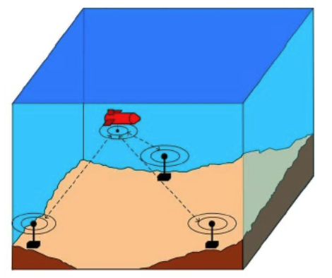 |
Short-base line (SBL)
|
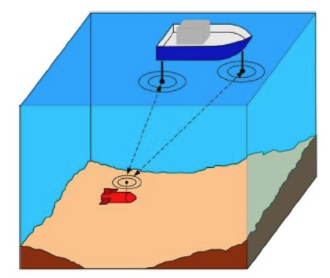 |
Ultra short base line (USBL)
|
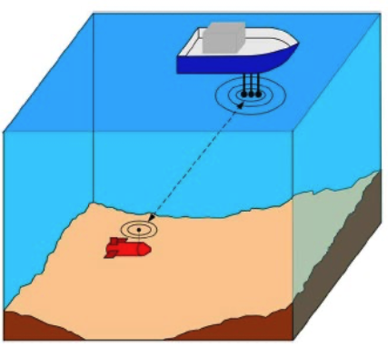 |
Figures: From Paull et all, JOE, 2014
Vehicle localises itself with respect to acoustic beacons
Beacons transmit regular signals
Synchronised clocks of beacons and vehicle
Assumes vehicle does not move too much between transmissions
Inverted systems when the vehicle transmits and beacons localise the vehicle
Difference betwen One-Way Travel Time (OWTT) and Two-Way Travel Time (TWTT)
LBL requires deployment and calibration which is not trivial
SBL alleviates some of this issue deploying transponders from the ship directly
USBL uses similar concept. Having multiple hydrophones close together form an antenna and obtain to determine the bearing from the vehicle
Localisation obtained measuring the range from a set of transponders which are in known locations
Range calculated as Time-of-Arrival of acoustic signals
Speed of sound is required and ray path corrections might be needed
The distance between two transponders is the base-line
Long-base line systems
- Base-line length: 500m - 5000m
- Frequency: 10-40 kHz
- 2 Way ToA or TDoA (no need of clock synchronisation)
- Different frequencies can be used to identify transponders and have parallel transmissions
- Transponders are usually moored at the bottom
- Geo-referentiation of the transponders through a calibration procedure from ship
Long baseline navigation (LBL) is a method of determining the position of a underwater vehicle or diver using a series of acoustic transponders that are strategically placed on the ocean floor. The transponders emit a unique acoustic signal that can be detected by a transceiver on the underwater vehicle or diver. By measuring the time it takes for the signal to travel from the transponder to the transceiver, and knowing the speed of sound in water, the distance between the transponder and the transceiver can be calculated. By measuring the distance to multiple transponders, the position of the underwater vehicle or diver can be determined using trilateration. LBL is commonly used in oceanographic research, underwater exploration, and commercial diving operations.
Issues
- When we enlarge the baseline we have refraction: Snell’s law must be accounted for
- Outliers due to multipath
- Missing data due to environmental fluctations
Typical performance - Accuracy: 0.1% - 2% of the acoustic path - The higher the frequency, the greater the accuracy, the shorter the baseline (attenuation)
- Precision: standard deviation between 0.2m -10m (Kinsey et al, MCMC 2006)
- The longer the baseline, the higher the standard deviation
Reversed LBL
Transponders are on the surface and hence with GPS
- No need for calibration
Position available to a centre station, not to the vehicle
Buoys need a radio antenna as well to communicate its measurements
Helpful for navigation postprocessing
Requires clock synchronisation
|
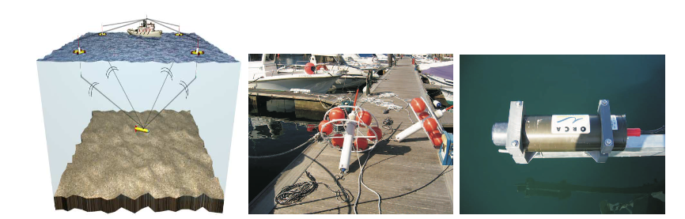 |
|
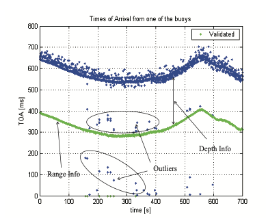 |
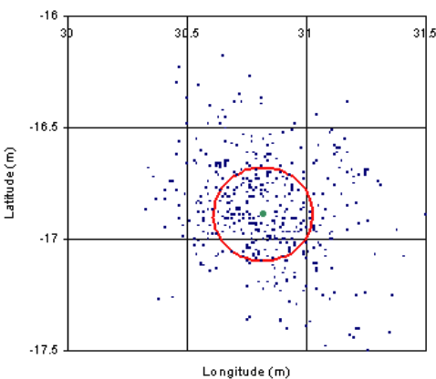 |
Figure: From Alcocer, 2006 (Left), Caiti, 2001 (Right)
- 0.5m accuracy - points are close to the truevalue (green dot)
- 1m Precision
Short Base Line (SBL)
Baseline 20-100m
Installed on ship hull or fixed structures
Calibration in dry-dock
Easy integration with on-board GPS
- Compensation of ship motion needed
Rarely used today
Still some applications for special systems and cases
- WHOI under-ice monitoring of AUVs
Performance includes with transponders separation
Same characteristics of LBL
Ultra Short Base Line (USBL)
Baseline: <0.1m
Installed on ship hull of deployed from side (portable)
Range and bearings interrogating transponders on the vehicle
It is an array! Beamforming / Phase information
Easy integration with on-board GPS, easy of deployment, no calibration needed for portable systems
- Compensation of ship motion needed
The ship knows the vehicle position, the vehicle does not
- USBL with communication capabilities to send back the position
- USBL main transponder installed on the vehicle (inverted USBL)
Example - Sonardyne SCOUT
|
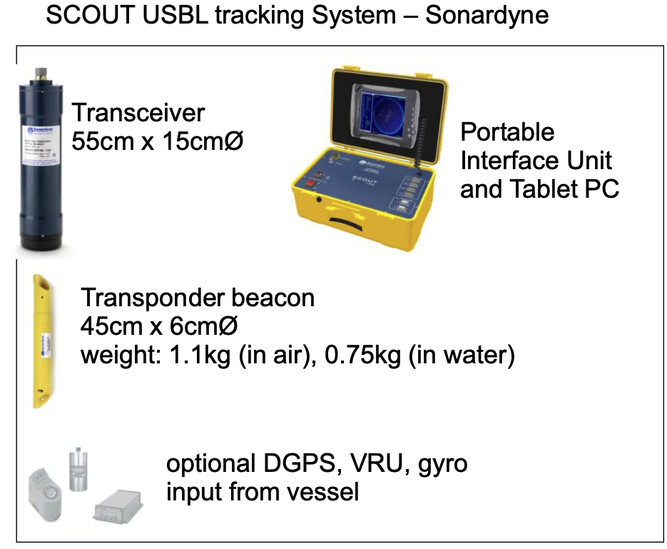 |
- Frequency: 35-55kHz
- Operating range: 500m
- Accuracy: 2.7% of slant range
HiPAP (Kongsberg)
Developed as part of the Hugin AUV programme in the mid-90s
High performance, transferred to almost all Kongsberg positioning systems
Sometime called Super LBL
240/280 elements to form a bulb array
|
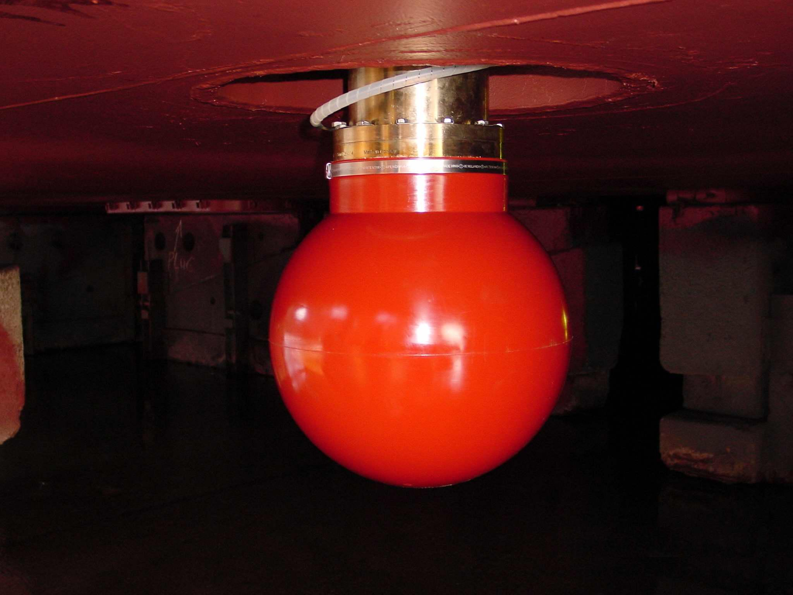 |
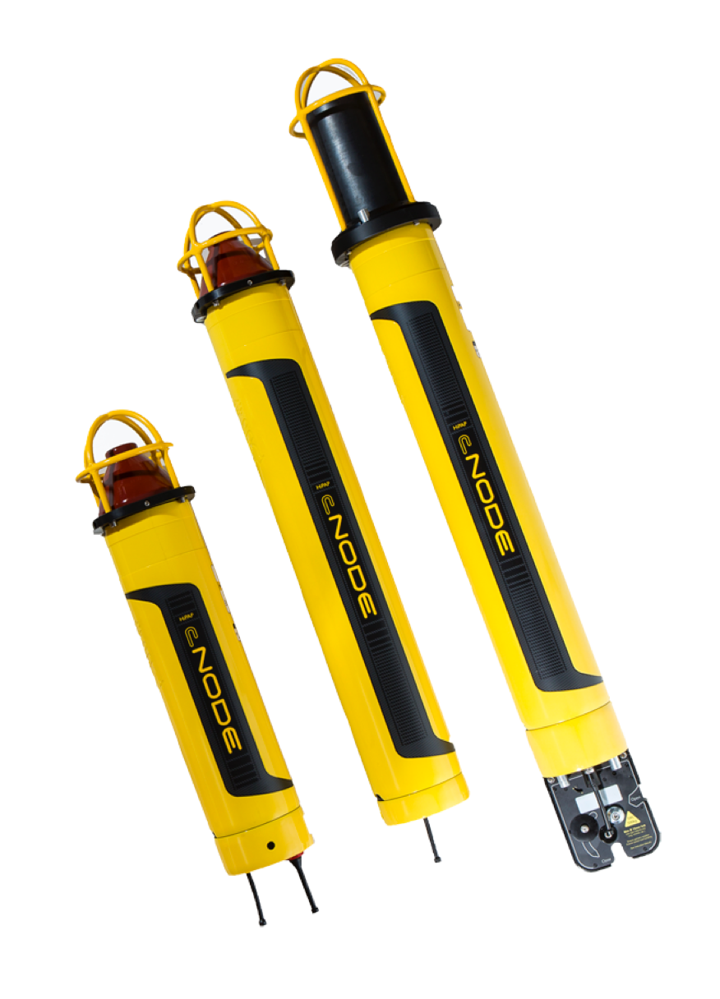 |
HiPAP High Precision Acoustic Positioning
Cymbal Acoustic Protocol
|
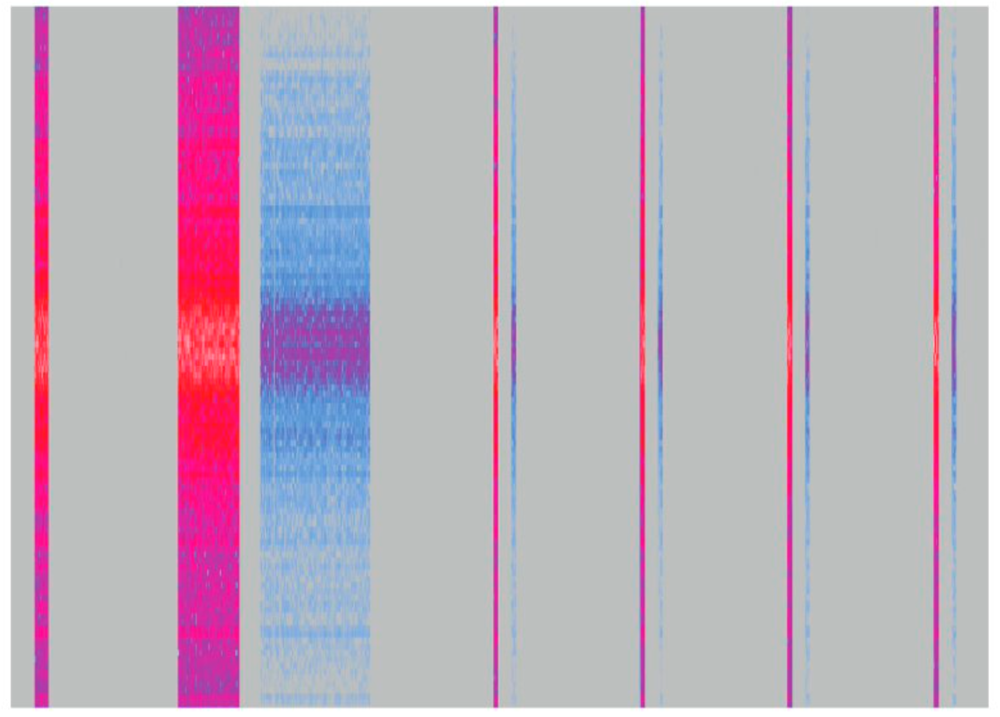 |
Figure: examples of time-frequency plots of Cymbal signals for navigation and communication. High intensity signals are from HiPAP, followed by weaker replies from a remote transponder (cNode)
Measurement compensation
Positions calculated from the raw measurements are influenced by variable sound velocity through the water column. The variable sound velocity causes an error in both range measurements and the angular measurements. By use of a sound profile, the system can correct these errors.
|
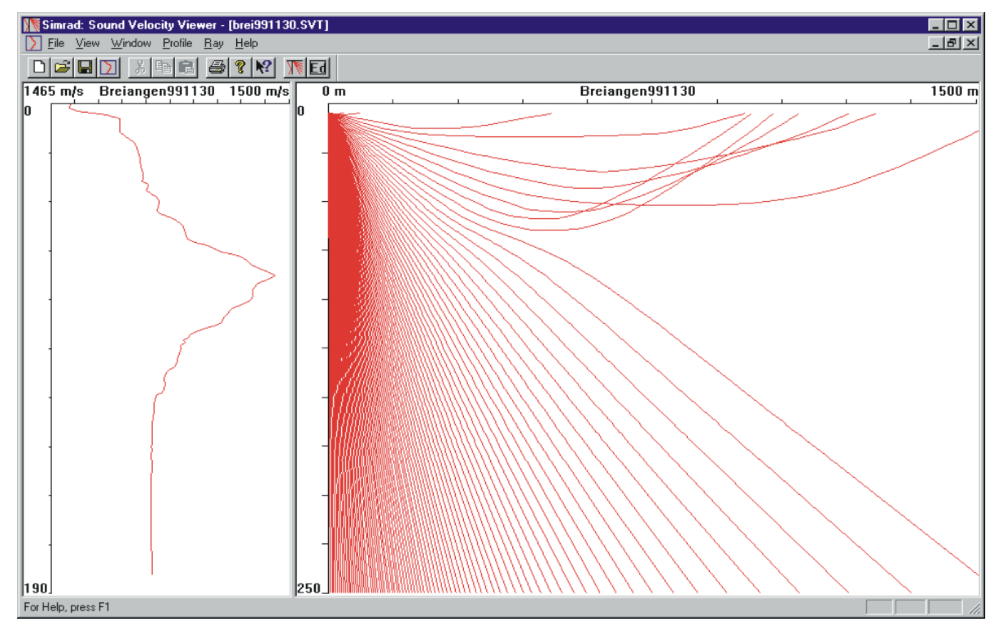 |
The sound velocity values may be measured by a probe and transferred to the system. If the depth of the target (transponder) is known either by depth sensor in the transponder or by an ROV depth sensor, these data can be transferred to the system and they will be used in the compensation. The range calculation is compensated for the error caused by different sound velocities in the water column, and for the extra propagation path caused by the ray bending. The angular measurements are compensated for the ray bending. The compensation is used in all positioning modes.
From HiPAP High Precision Acoustic Positioning Product description.
- No reply problems - how can we explain it?
HiPAP 500 Technical Specifications
|
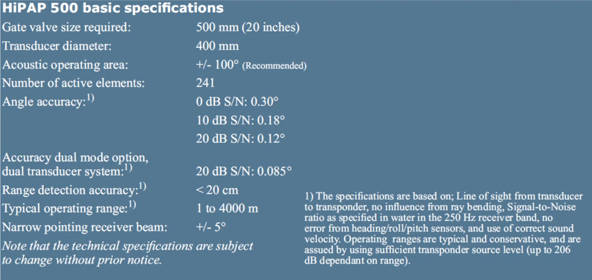 |
Angle accuracy depends on Signal to Noise Ratio
Note how reported performance are based on a number of assumptions
Assumptions are not always reported in the datasheet
HiPAP is also an acoustic modem
Think of HiPAP-AUV operations
Underwater Communications
- Underwater Acoustic Communications are difficult due to:
- Limited bandwidth as range increases
- Longer range require lower frequencies
- Larger bandwidth would achieve higher resolution
- Narrow bandwidth means less information we can transmit (lower bitrate)
- Usual resolution-range trade-off
- Channel dependent performance (source-receiver geometry, environment)
- E.g., shadow zones
- Limited bandwidth as range increases
- Most Systems
- Direct-Sequence Spread Spectrum (which enhanced SNR - same method as GPS)
- Estimation of the channel transfer function
- Effectively the Transmission Loss at the various frequencies
- Depends on the environment
- Typically each acoustic message starts with a preamble (same bits)
- Distortion due to TF of the channel
- Continuous channel estimation
- Some technology is available in US only
- WHOI, Teledyne Benthos
- Today acoustic modems tend to be coupled with USBL
|
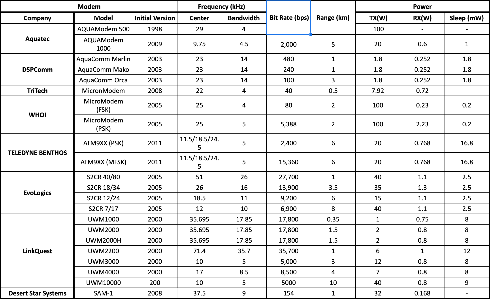 |
- Note the very limited bitrate
- Nominal performance vs operational performance (bitrate, range)
What can you theoretically achieve
|
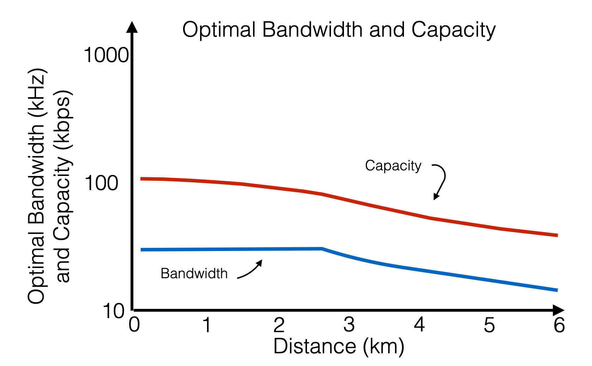 |
- Source power and optimal power to have 20dB SNR (lower SNR means lower performance)
- Ex. at 1km, max capacity is 100 kbps
- Commercial modems are below this limit but even the optical case is still very limited
- We cannot enlarge the bandwidth to have better capacity
From Caiti, Munafo, Crisostomi, Physical Characterisation of Acoustic Communication Channel Properties, 2010
Robustness
- Even with degraded performance, some equipment proven reliable in repeated field tests
- WHOI, Evologics, Teledyne Benthos, Tritech, LinkQuest
- Evologics modems have ranging and USBL capabilities
- These capabilities open up a series of possibilities for localization, even with AUV teams
Doppler Velocity logger
A Doppler velocity logger (DVL) uses the Doppler effect to measure the velocity of a moving object.
The Doppler effect is a change in frequency or wavelength of a wave caused by the motion of the source or the observer.
A DVL typically works by emitting a high-frequency sound wave (acoustic pulses) and measuring the frequency shift of the returning echoes.
The frequency shift, also known as the Doppler shift, is directly proportional to the velocity of the object. By measuring the Doppler shift of multiple echoes and using trigonometric calculations, the DVL can determine the velocity of the object in multiple dimensions (e.g. forward and lateral velocity, or velocity relative to the bottom).
Used to measure the velocity of an object in water by emitting acoustic pulses and measuring the Doppler shift of the echoes that reflect off the seafloor or other objects in the water.
DVLs are commonly used in a variety of applications such as underwater navigation, oceanography, hydrographic surveying, and underwater mapping.
A DVL is an acoustic sensor that estimates velocity relative to the sea bottom.
Achieved by sending a long pulse along a minimum of three acoustic beams, each pointing in a different direction.
Typically, this produces estimates of velocity converted into an XYZ coordinate frame of reference – the DVL’s frame of reference.
Together with a heading estimate, these velocity estimates may be integrated over the ping interval to estimate a step-by-step change of position - i.e. displacement = velocity × time step.
Measurement of velocity relative to the seabed from doppler shift of acoustic echos
Emission of very high frequency signals (200 KHz – MHz)
Originally designed as a system to measure the sea current from backscatter of particles in the water column
|
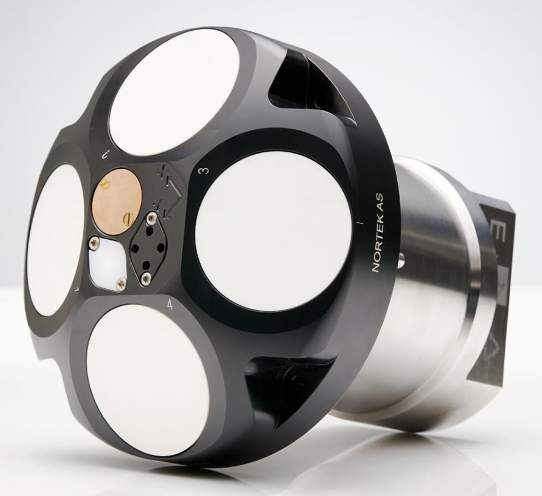 |
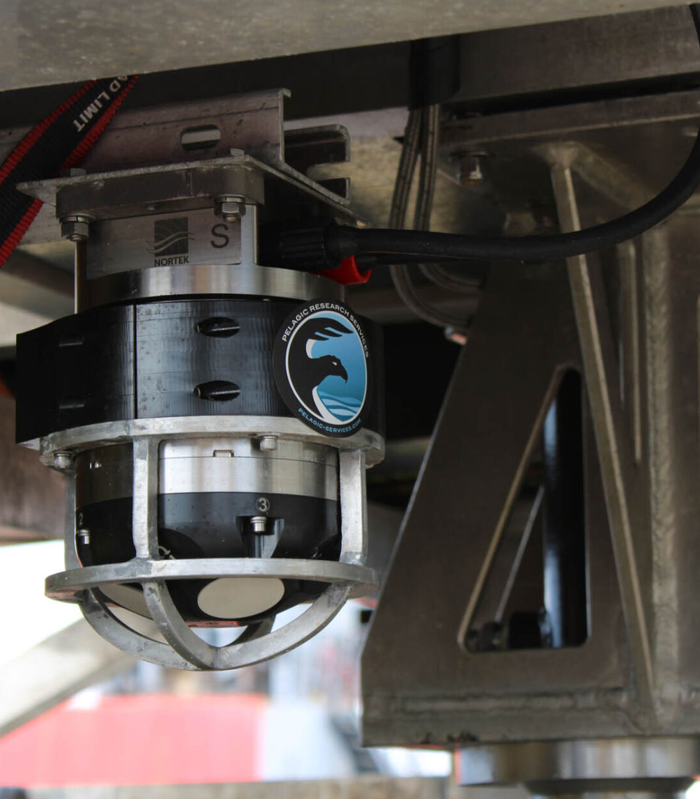 |
<td>
<img src="./images/11.underwater-navigation/13.dvl-3.png" alt="13.dvl-3" style="width: 650px"/>
</td> |
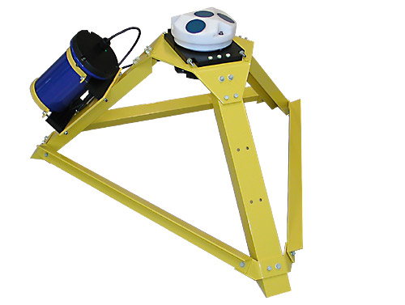 |
Doppler Equation
- The Doppler shift is directly related to the velocity of an object.
- The Doppler shift is the change in frequency or wavelength of a wave caused by the motion of the source or the observer. When an object is moving towards a stationary observer, the frequency of the waves emitted by the object will appear to be higher (known as a blue shift) than it actually is. Conversely, when an object is moving away from a stationary observer, the frequency of the waves emitted by the object will appear to be lower (known as a red shift) than it actually is.
In the case of a Doppler velocity logger (DVL), the instrument emits a high-frequency sound wave and measures the frequency shift of the returning echoes. The DVL then uses the measured frequency shift, also known as the Doppler shift, to calculate the velocity of the object.
The Doppler velocity logger (DVL) measures the velocity of an object by comparing the frequency of the emitted wave and the frequency of the wave that is reflected back from the moving object. The difference in these frequencies is directly proportional to the velocity of the object.
The relationship between the Doppler shift and the velocity of an object is given by the Doppler equation, which relates the velocity of the object to the ratio of the frequency of the emitted wave to the frequency of the reflected wave. The equation takes into account the speed of sound in the medium and the angle between the object’s velocity vector and the line connecting the object to the observer.
|
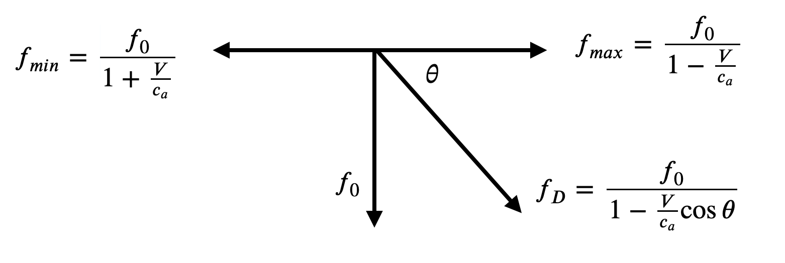 |
The general form of the Doppler equation:
\[ f = \frac{c\pm V_r}{c\pm V_s}f_0 \]
C = propagation speed of waves in the medium;
Vr = speed of the receiver relative to the medium, +c if the receiver is moving towards the source, -c if the receiver is moving away.
Vc = speed of the source relative to the medium, +c if the source is moving away -c if the source is moving towards the receiver.
Acoustic Doppler Current Profiler (ADCP)
- Operated from surface or moored at the bottom
|
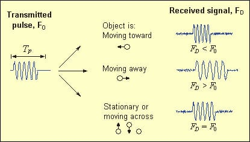 |
Figure from [ADCP | WHOI]9https://www.whoi.edu/what-we-do/explore/instruments/instruments-sensors-samplers/acoustic-doppler-current-profiler-adcp/)
An Acoustic Doppler Current Profiler (ADCP) is a type of instrument that uses the Doppler effect to measure the velocity of water currents at different depths. It operates by emitting a series of high-frequency sound pulses, which travel through the water and are reflected back by particles or scatterers in the water. The ADCP then measures the Doppler shift of the returning echoes, which is directly proportional to the velocity of the water current.
The operating principle of an ADCP can be broken down into several steps:
- Transmitting: The ADCP emits a series of high-frequency sound pulses, which travel through the water and are reflected back by particles or scatterers in the water.
- Receiving: The ADCP receives the echoes of the sound pulses, which have been reflected back by the particles or scatterers in the water.
- Doppler shift measurement: The ADCP measures the Doppler shift of the returning echoes, which is directly proportional to the velocity of the water current. The ADCP uses the Doppler equation to determine the velocity of the water current.
- Beamforming: The ADCP uses a beamforming algorithm to determine the direction of the water current. This is done by emitting the sound pulses in different directions and measuring the Doppler shift of the returning echoes in each direction.
- Profiling: The ADCP uses the measured velocities and directions of the water current to profile the current at different depths. This is done by emitting the sound pulses at different depths and measuring the Doppler shift of the returning echoes at each depth.
- Data processing: The ADCP processes the data and generates a current velocity profile, which shows the velocity of the water current at different depths
In summary, an Acoustic Doppler Current Profiler (ADCP) uses the Doppler effect to measure the velocity of water currents at different depths by emitting a series of high-frequency sound pulses, measuring the Doppler shift of the returning echoes, and using the data to profile the current at different depths.
|
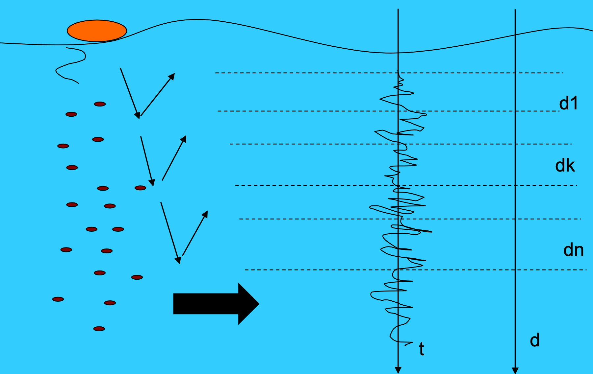 |
<td>
<img src="./images/11.underwater-navigation/fig2-hires.jpg" alt="fig1-hires" style="width: 450px"/>
</td> |
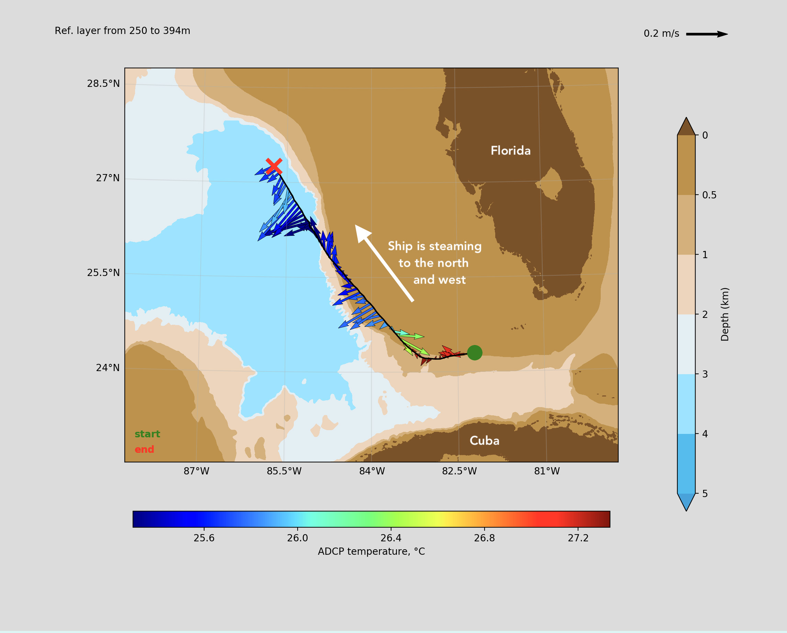 |